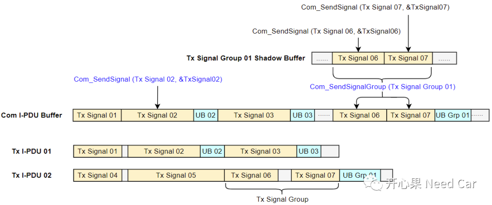
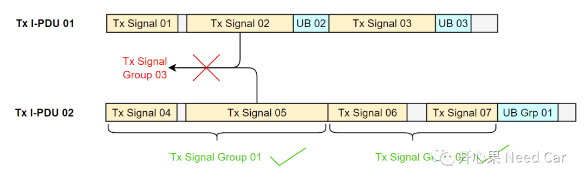
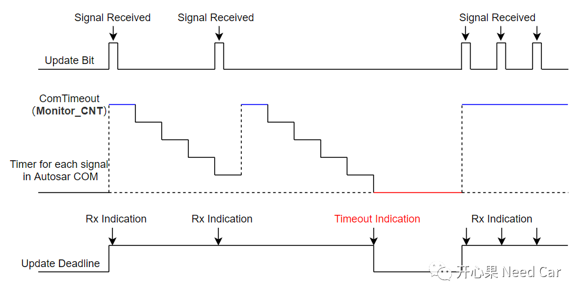
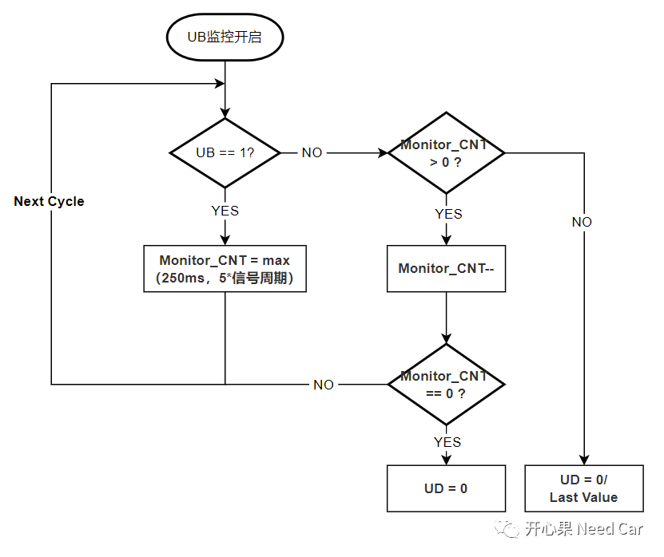
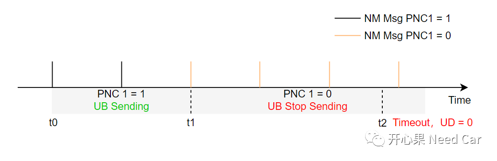
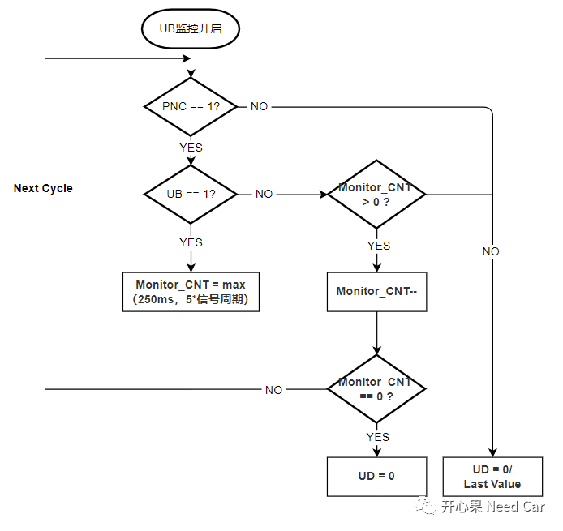
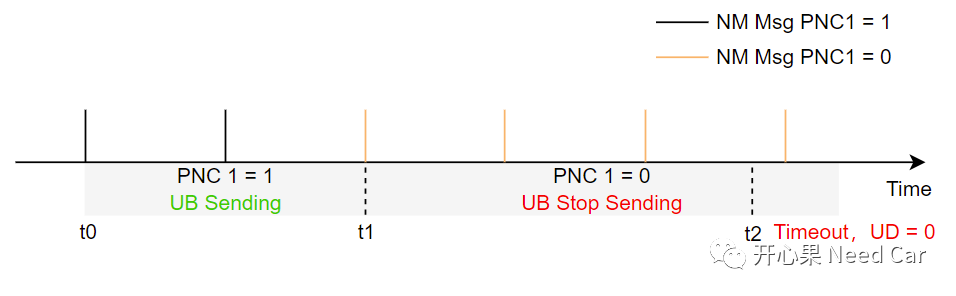

开心果 Need Car · 2022-06-27T17:55:00+08:00 · 微信原文
对于开发人员来说，只有准确地理解需求才能开发出符合预期的Code，避免Bug。虽然是老生常谈的话题，但是，实际开发我们依然会对需求的理解产生偏差。本文妄谈一下对于UB、UD的需求理解，抛砖引玉。
UB：Update-Bits，来自Autosar COM模块的一个概念，作用：接收端在接收Signal/Signal Group之前识别发送方是否更新过Signal/Signal Group中的数据。注意：Update-Bits由COM模块设置。
UD：Update Deadline，这个概念，Autosar中并没有定义。UD的作用类似COM模块的Deadline monitoring功能，即：对Signal/Signal Group超时监控。在Autosar COM模块中，配置参数ComTimeout可实现Signal/Signal Group超时监控。
1、UB更新策略
上述两个概念可以看出，UB绑定Signal/Signal Group，如何绑定呢？发送端，UB更新操作如下：
SWC通过RTE调用Com_SendSignal()更新Signal02时，COM模块置位Signal02对应的UB 02（UB 02 = 1）；
SWC通过RTE调用Com_SendSignalGroup()更新Signal Group 01时，COM模块置位Signal Group 01对应的UB Grp 01（UB Grp 01 = 1）；
Signal Group 01包含Signal06、Signal07；
Group Signal调用Com_SendSignal()时，更新Shadow Buffer中信号数据，调用Com_SendSignalGroup()时，将Shadow Buffer中信号数据更新到I-PDU Buffer中。
如下所示：

提示：
一个I-PDU可以包含多个Signal Group，比如：Tx I-PDU 02包含Tx Signal Group 01、Tx Signal Group 02；
一个Signal Group必须在一个I-PDU内，不能将跨I-PDU的信号放入同一个Signal Group，比如：Tx I-PDU 01中的信号Tx Signal 02与Tx I-PDU 02中的信号Tx Signal 05不能放入Tx Signal Group 03，如下所示：

2、为什么需要UD
3、UB和UD的关系



第二、监控PNC策略

相对于不监控PNC策略，可以规避PNC = 0，停发UB信号时，UD = 0的问题。如上的两种处理策略，没有优劣，取决于具体需求。
第一、问题描述
使用监控PNC策略，与UB关联的PNC均为0时，UD = 0（预期是UD = 1），即：t1时刻不应再监控UB，实际UB依然在监控，且t2时刻UB超时，UD = 0。期望t1之后UD = 1，如下所示：

由于UD = 0，上层的处理策略不同于正常模式，引发其他问题（本文不展开讨论）。
第二、原因分析
第三、解决策略
通过每个XxNM模块的EIRA识别真正的PNC信息。
往期精彩回顾